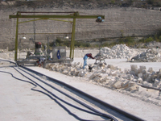
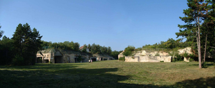
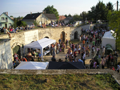
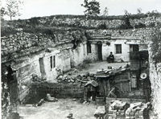
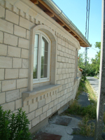
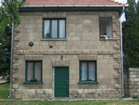
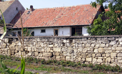
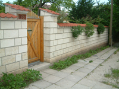

|
Bánya neve: Sóskúti kõbánya |
|
Rövid kõzetfizikai leírás:
Az építõ- és kõfaragó iparban durva mészkõnek (puha mészkõ, ikrás mészkõ, ooidos mészkõ, szarmata mészkõ) nevezett mészkõféleség makroszkopikus szerkezetére jellemzõek a néhány milliméteres, kerekded, ikraszerû CaCO3 szemcsék (ooidok), valamint csiga maradványok és algatöredék. A durva mészkövek képzõdésében kulcs szerepet játszott egy sekélyvízi mészalga, mely sok esetben a kõzet legfõbb alkotójává vált. Kialakulása a földtörténeti harmadkor közepére, a felsõ miocén korszakra tehetõ.
A durva mészkõ szöveti képe és összetevõinek vizsgálata alapján megkülönböztethetünk finomszemcsés, középszemcsés és durvaszemcsés változatokat (Török Á. 2005). Az elsõ igen homogén és apró szerkezetû (Sóskúton "krétás"), õsmaradványok igen ritkán találhatóak benne. A közép- és durvaszemcsés változat néhány centiméteres õsmaradványokat is tartalmaz változó arányban (Sóskúton "csigás"). Ez utóbbi két típus kvarc és kvarcitszemcséket is tartalmazhat.
A durva mészkõ erõsen porózus kõzet. Pórusai egymással kapcsolatban vannak, vízfelvétele 20-30 v% is lehet. Szilárdsága a többi típusú mészkõhöz viszonyítva is alacsony, 50-500 kg/cm2. Mindezek miatt fagyállósága változó, beépíteni csak víztõl védett körülmények között célszerû. Az apró szemcsés változat idõtállósága gyengébb a durvaszemcsésnél. A kõzet porózus felszíne miatt a légköri szennyezõdéseket könnyen megköti, felülete gyorsan elszínezõdhet és mállási kéreg alakul ki rajta.
A durva mészkõ igen könnyen megmunkálható, vágható, faragható, nem csiszolható.
A kõzet jellemzõ felhasználása:
Durva mészkövet Budapest környezetében napjainkban csak Sóskúton bányásznak, holott évszázadokon át a térség jellemzõ építõköve volt. A Tétényi-fensík, a Budaörsi és Zsámbéki medence, a Sóskúti-fennsík mind a szarmata mészkõ elõfordulási területei. Nagy jelentõségû bányái üzemeltek Kõbányán (X. kerület), Budafokon, Diósdon és Sóskúton. Minden esetben tömbökben fejtették és e kõzet adta a környezõ települések legjellemzõbb építõkövét. Budafokon, Sóskúton, Etyeken stb. máig nagyobb számban fennmaradt durva mészkõ épületek vakolatlan homlokzata meghatározó jelentõségû a sajátos településkép kialakulása szempontjából. Melléképületek, kerítések, támfalak, hagyományosan szintén e mészkõféleségbõl készültek a térségben. Budapesten könnyû megmunkálhatósága, és a bányák közelsége miatt e kõzetbõl épült többek közt az Országház és a Citadella jelentõs része is.
Gazdasági és településtörténeti szempontból fontos megemlíteni Budafok és Kõbánya durva mészkõbe vágott hatalmas pincerendszereit, melyek az 1860-as évekig a budai borvidék bortermelését szolgálták. A filoxéra után megüresedett pincéket Budafokon a borkereskedõk, Kõbányán a Dreher sörgyár hasznosította. Településtörténeti szempontból egyedülállóak a durva mészkõbe vágott barlanglakások, melyek az 1960-as évekig használatban voltak.
A sóskúti bánya hagyományosan 20x20x40 cm falazóblokkot és 10x20x40 cm válaszfal elemet gyárt. A kõzet szöveti felépítése szerint krétás (finom szemcsés) és csigás (durva szemcsés) változat különböztethetõ meg. A csigás idõtállósága lényegesen jobb.
Szabad térben történõ beépítése esetén figyelembe kell venni fagyérzékenységét. Minden esetben célszerû fedkõvel védeni a vízszintes felületeket, valamint szigeteléssel óvni a szerkezetet a felszívódó nedvesség ellen. Lábazatok esetén a csapó esõ elleni védelem miatt javasolt a felület hidrofóbizáló anyaggal történõ kezelése. Alacsony nyomószilárdsága, kis kopási ellenállása és fagyérzékenysége miatt járófelületek készítésére csak korlátozottan (pl. pincék padlóburkolata) javasolható.
Táj
|  Sóskúti kõbánya |
 Sóskúti kõbánya 1890 körül |
 Egykori diósdi kõbánya |
 Etyeki körpince |
 Barlanglakás |
 Barlanglakások Budafokon 1950 körül |
 Barlanglakások Budafokon 2006 körül |
{kind=link}
{kind=link}
{kind=link}
{kind=link}
 Budafoki, dézsmaház utca |
 BUdafok, Dézsmaház utca |
 BUdafok, dézsmaház utca |
 Sóskút, lakóház |
 Sóskút, Polgármesteri hivatal |
 Sóskút, lakóház |
 Sóskút, lakóház |
{kind=link}
{kind=link}
Kerti építmény
|  Etyek, kerítés |
 Etyek, kerítés |
 Érd, kerítés |
 Kõ fal |
 Kerti tároló |
 Budafok, közkút |
{kind=link}
{kind=link}
Linkek
link1
link2
link3